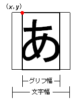

#include <nnsys/g2d/g2d_CharCanvas.h>
void NNS_G2dCharCanvasDrawGlyph(
const NNSG2dCharCanvas* pCC,
const NNSG2dFont* pFont,
int x,
int y,
int cl,
const NNSG2dGlyph* pGlyph
);
| pCC | [IN] CharCanvas へのポインタ |
| pFont | [IN] フォント へのポインタ |
| x | [IN] 文字の左上 x 座標 (CharCanvas座標系) |
| y | [IN] 文字の左上 y 座標 (CharCanvas座標系) |
| cl | [IN] 文字の描画に用いる基準カラーNo. |
| pGlyph | [IN] 描画するグリフへのポインタ |
なし。
CharCanvas pCC に フォント pFont
を使ってグリフ pGlyph を描画します。
文字の描画には透過色と cl から連続する必要な数の色がつかわれます。
例えば 3bpp (23=8色) のフォントで cl に 5 を指定すると
透過色(カラーNo. 0) とカラーNo. 5〜11 の計8色を使って描画を行います。
座標は CharCanvas 左上隅を (0, 0) とする座標系をとります。
x, y はそれぞれ
- [文字のグリフ幅] < x < [CharCanvas領域幅]
- [フォント高] < y < [CharCanvas領域高]
を満たしていなければなりません。
文字は座標 (x, y) が下図の赤点の位置になるように描画されます。

この関数は縦書き/縦持ちフォントに対応していません。
2007/03/14 縦書き/縦持ちフォントについて記述
2005/05/25 初版